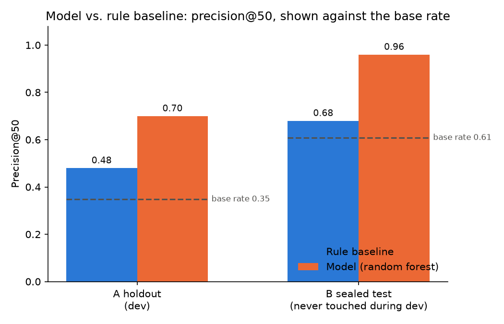
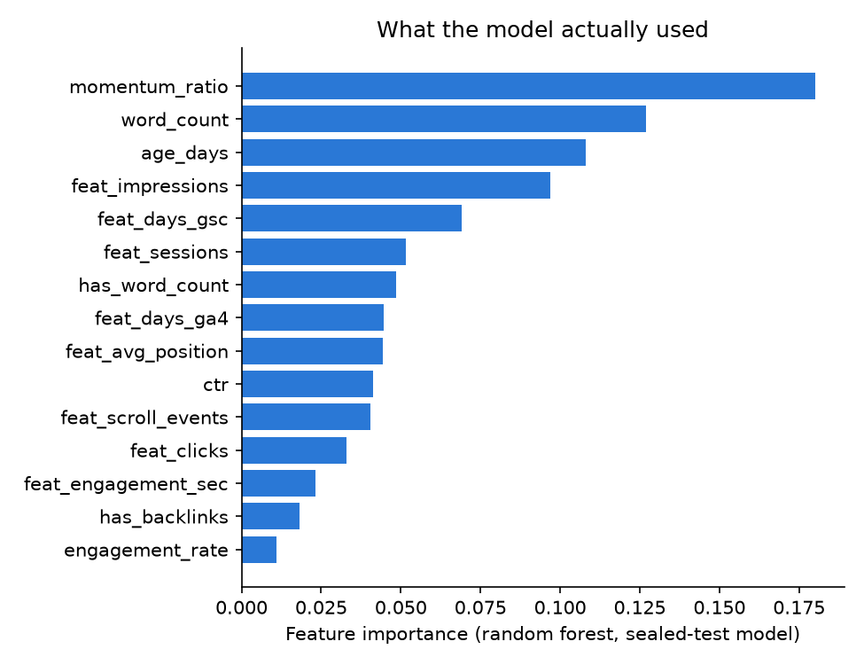

FlyRank ML Internship · Capstone research paper · Lane 2, full-warehouse rebuild
A ranking signal for FlyRank's content-refresh queue, built directly from 78.8 million raw daily search rows — not a precomputed flag — and checked against a test period the model never saw while it was being built.
Abstract
Which pages in a client's content inventory should a reviewer with limited time look at first? Using FlyRank's full pseudonymized warehouse release (78.8M daily rows across 519,606 content items), I built two independent time snapshots directly from raw daily search/engagement facts — never from a precomputed decision field — and defined "declining" as a ≥20% drop in daily click rate over the following 60 days. A random forest trained on the first snapshot and sealed-tested once on a second, later snapshot lifted precision@50 from 0.48→0.70 (dev holdout) and 0.68→0.96 (sealed test), both clear of their respective base rates (0.35 and 0.61). The output is a ranked review queue with plain-language reason codes, meant to shorten a manual audit, not to replace editorial judgment.
FlyRank's editors can't manually audit every page in a client's inventory every cycle. The question this paper answers is narrow on purpose: which content items should a reviewer with limited capacity look at first for refresh, metadata, or engagement work?
source
FlyRank/internship-warehouse on Hugging Face — gated, instant approval — build
flyrank_pseudonymized_warehouse_release_v20260703. Three tables: dim_clients
(104 rows), dim_content (519,606 rows), and fact_content_daily_performance
(78,835,655 rows, 2025‑01‑27 → 2026‑06‑30, partitioned by month). The starter
sample CSV that ships with the internship repo was not used for this result —
every number here comes from the raw warehouse.
excluded on purpose
last_optimized_date / optimization_eligible_date — these reflect a
past editorial decision, not an observed outcome. Using them risks learning what the
product already decided to fix, rather than discovering signal.fact_content_query_90d (the whole table) — its window is fixed at a single
window_start of 2026‑04‑02 across every row, which sits inside or after both of my
label windows. There's no safe way to use it as a pre-decision feature.health_score, priority_score,
action_type, needs_ctr_fix — aren't shipped in this release at all.No client names, domains, URLs, titles, or raw queries appear anywhere in this paper or the underlying repo. Every id below is a pseudonym, used only for joining, grouping, and splitting — never as a model feature.
Two independent decision-point snapshots, each built fresh from the daily fact table:
feature window (90 days, trailing) label window (60 days, forward) · B starts two months after A and is touched only once, as the sealed test.
dim_clients.is_active AND has_gsc_access AND gsc_data_start ≤ feature_window_start
(guarantees real demand signal and a full, uncut trailing history) plus
dim_content.is_published AND NOT is_deleted plus feat_impressions ≥ 50
(a minimum-volume filter, so the click-rate signal isn't just noise).
A page "declines" if its daily GSC click rate drops ≥20% from the trailing 90-day
feature-window average to the forward 60-day label-window average — computed fresh from raw
future rows at each decision point, never from a reused trend_direction-style field.
Pages with zero feature-window clicks get no label (there's no rate to measure a change
against) and are excluded from training.
Demand/engagement aggregates (impressions, clicks, sessions, engaged sessions, engagement seconds, AI-referral sessions, scroll events, average position), coverage flags (days with GSC/GA4 data), derived ratios (CTR, engagement rate, and momentum ratio — the within-feature-window trend, split at the window's own midpoint, so it never touches the label window), content metadata (type, intent, word count, backlinks, search volume, competition, age), and missingness flags instead of a blind zero-fill.
A transparent rule, using only feature-window signal:
demand_ok = feat_impressions ≥ 50 decline_signal = max(0, 1 − momentum_ratio) baseline_score = decline_signal × log(1 + feat_impressions) if demand_ok else 0
It ranks pages whose click rate was already falling inside the trailing 90 days, weighted by how much real traffic they carry — explainable to a non-technical reviewer in one sentence, and built from exactly the same feature-window data the model gets.
Two layers, neither a plain random row split: a grouped 80/20 client holdout within snapshot A only for model selection (logistic regression, decision tree, random forest — picked by average precision), then snapshot B — an entirely separate, later decision date — touched exactly once, after the model trained on A was finalized.
Same split, same metric, both models measured against the baseline and against the base rate — the honest floor any score has to clear before "high precision" means anything:
| Snapshot | Baseline P@50 | Model P@50 | Base rate | Baseline AP | Model AP |
|---|---|---|---|---|---|
| A holdout (dev) | 0.48 | 0.70 | 0.35 | 0.43 | 0.60 |
| B sealed test | 0.68 | 0.96 | 0.61 | 0.64 | 0.66 |


Surprise worth stating plainly: the decline base rate nearly doubled between the two snapshots (35% → 61%, two months apart). Grain and eligibility checks pass cleanly on both — it isn't a query bug — but I don't know why it shifted, and I'm not claiming to. It's the reason the sealed-test comparison is read against B's own base rate, not A's.
Pull the model's ranked top-N per client each cycle into the refresh queue, using the reason code to brief the reviewer in one line. A real row from the sealed-test queue (pseudonymous ids only):
I'd trust the top ~50 per client as strong first-pass review candidates given the observed lift above; lower-ranked items are better treated as monitor-only. Confidence: directional and decision-support — this ranks risk of decline, it does not promise a refresh will fix it.
Requires an HF_TOKEN (Hugging Face read token, gate accepted on
FlyRank/internship-warehouse) in a local, gitignored .env — never hardcoded.
python work/capstone/scripts/build_decision_frame.py --decision-date 2026-01-31 --feature-days 90 --label-days 60 --tag A python work/capstone/scripts/build_decision_frame.py --decision-date 2026-03-31 --feature-days 90 --label-days 60 --tag B python work/capstone/scripts/join_and_label.py --tag A --feat-start 2025-11-02 python work/capstone/scripts/join_and_label.py --tag B --feat-start 2025-12-31 python work/capstone/scripts/baseline_and_model.py python work/capstone/scripts/make_figures.py
Seed 42 everywhere (client split + random forest). The sealed-test evaluation is
checkable, not just claimed: the script that builds the B frame and the metrics file it
produced are both committed in the repo below.
github.com/Mr-PeterMaged/flyrank —
full notebooks, data contract, and every script referenced above live under work/.